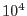

The functions of eimsimbatch are best illustrated by example. Suppose you follow the cookbook example described in the eimsim documentation, which involves running eimsimbatch with all its parameters left at default. What this will achieve is a single invocation of eimsim, and thus a single output source list which records the detections in just 1 set of images. There are not likely to be more than 100 or so detections in this list unless you have used a large number of different image templates in the input set, which memory-wise is an inefficient thing to do. A better thing to do is specify some number of iterations via the nfields parameter, eg
eimsimbatch nfields=100
This will generate an ensemble of 100 lists of detections from the same starting set of template images, which will be merged together into one if you then subsequently run eimsimreduce as the cookbook advises. The eimsimbatch task achieves this by calling eimsim nfields times, with the supplied value of the -idnumber parameter of eimsim starting at 1 and incrementing to nfields. The -idnumber value is written by eimsim to the column FIELD_N of the output source lists.
Suppose you decide that you would like to add another 100 runs to the ensemble. You might be tempted to simply repeat the last eimsimbatch command. DO NOT DO THIS - you will just overwrite your previous 100 files. The correct way to do it is as follows:
eimsimbatch nfields=100 startatn=101
Ok, now you get serious - you decide that nothing less than  runs will satisfy you. Running sequential invocations of eimsim, at about 10 min per, will take quite a while however. You can get around this if there is more than one processor available to you. Suppose you have 5 processors. Assign each processor a stream number, ssh to remote nodes if you need to, and on each one, set the following command going:
eimsimbatch nfields=2000 streamnumber=<1 to 5>
You may run all these 5 streams from the same directory if your hardware setup allows this: all tasks in package eimsim have been designed to avoid crosstalk by including the stream number and id (ie, field) number in all relevant file names.